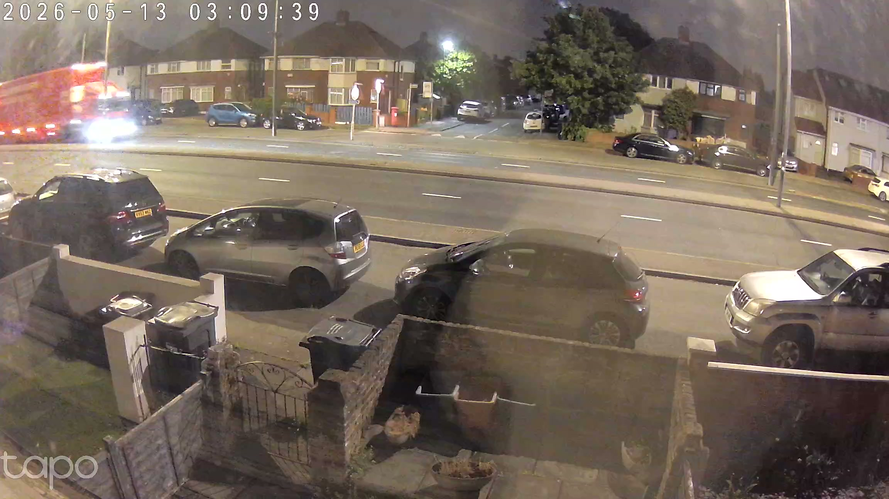

Wanyard records your RTSP cameras, runs YOLO object detection in real time, and serves a clean web viewer over your LAN. Two Docker containers. No cloud. No subscription. No Home Assistant required.
git clone github.com/blowhacker/wanyard && cd wanyard && docker compose up -d

Wanyard is opinionated about the boring parts (recording, retention, browser playback) so the interesting parts (detection, search, export) feel light.
Every camera is recorded to disk as seamless MP4 segments and served live to browsers as HLS. Scrub the timeline, jump to any moment, export a clip — no transcode dance.
YOLOv8 tags every segment with per-class detections — person, car, dog, cat, bicycle, package, the full COCO set — and crops a thumbnail for each event so the activity feed is scannable.
A single-page viewer with a 24h timeline filmstrip, per-class event filtering, and clip download. Designed for a laptop on the couch, not a kiosk in a server room.
Keep N days of footage, or cap usage at X gigabytes. Wanyard prunes the oldest segments first and never lets the recorder fill the drive.
The recorder + web server is one container; the YOLO worker is another. GPU is optional — drop in docker-compose.gpu.yml when you want acceleration.
Wanyard is just two Docker containers — drop them on a Synology, Raspberry Pi, or homelab box on your LAN, or on a Hetzner / Fly.io / DO droplet and reach it over WireGuard or Tailscale. Self-hosted means your server, not necessarily one in your house.
No camera lock-in. No "verified device list." If you can paste a URL that starts with rtsp://, wanyard records it.
+----------+ rtsp +----------+ mp4 +----------+ | camera | ----------> | recorder | ----------> | disk | +----------+ +----+-----+ +----+-----+ | hls | backfill v v +----+-----+ +----+-----+ you ---> | viewer | <--events-- | yolo | +----------+ +----------+
The capture server only ever cares about turning RTSP into MP4. The YOLO worker only ever cares about tagging segments with detections. If one is offline, the other keeps doing its job.
An honest comparison. The other projects in this space are good. Pick the one that matches what you actually want to run.
:8091, and nothing else to configure.
Wanyard needs Docker and a directory to write footage to. That's it. The YOLO model downloads automatically on first run.
# clone, build, run git clone https://github.com/blowhacker/wanyard.git cd wanyard docker compose up --build -d # add your first camera open http://localhost:8091/settings
# enable the gpu override cp docker-compose.gpu.yml \ docker-compose.override.yml docker compose up --build -d # yolo worker now runs on cuda docker compose logs wanyard-yolo
rtsp:// URL), check system status, configure cleanup.Stop renting your own footage.
git clone github.com/blowhacker/wanyard && cd wanyard && docker compose up -d